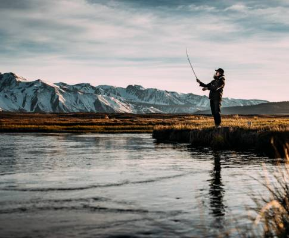

 Our story began simply enough--with one woman, one fishing pole, and one dream. Pat grew up in the mountains of southern Canada. She spent her weekends fishing with her grandfather. Her grandmother would always bake cookies for them to snack on on long stints in the placid lake waters of Canada and Washington. It was there that Pat's love for fish and sweets began. And wheels began turning.
Pat went to school first as a software developer, but she found the logic confusing and fell behind in here classes. After failing out, she thought to pursue her true passion from youth: fishing. She became a semi-professional fly fisher, winning several state and regional tournaments. But the vision of salty, savory, fishy sweets never strayed far from her mind. So she took all of her fly fishing prize winnings and turned them into Pat's Salmon Cookies!
Now, Pat shares her love of fish and confections with Seattle and the world beyond! With new locations opening all around the world. Try them! You'll love them!